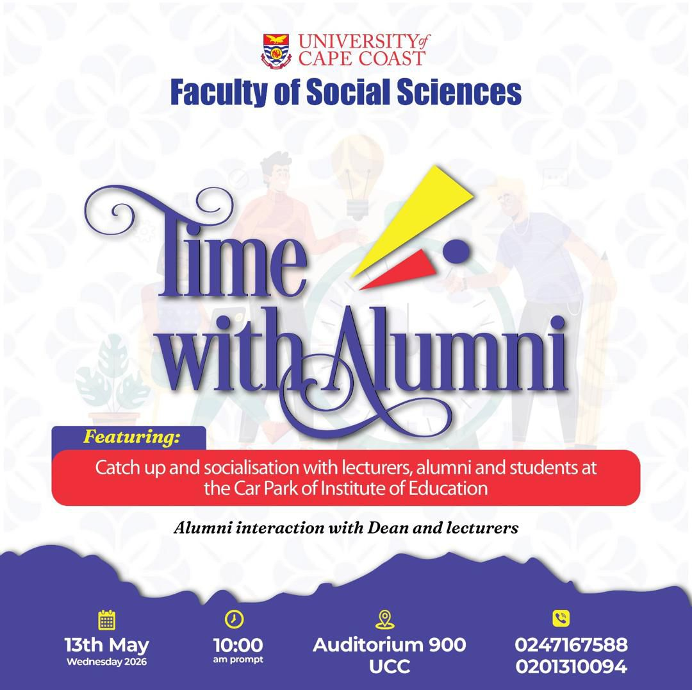
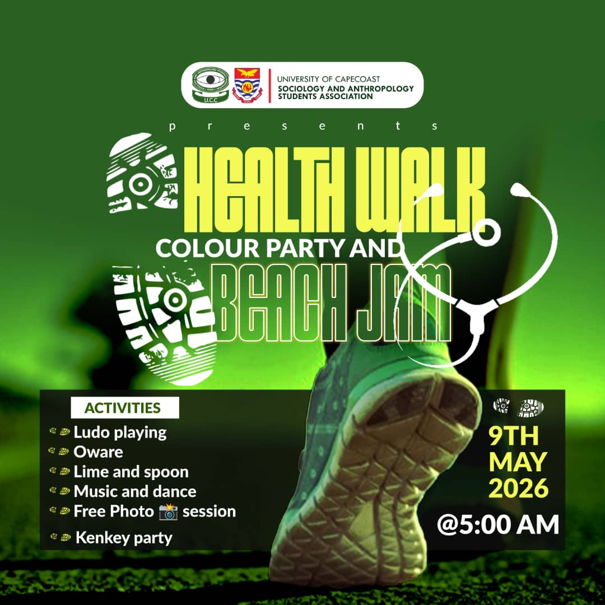
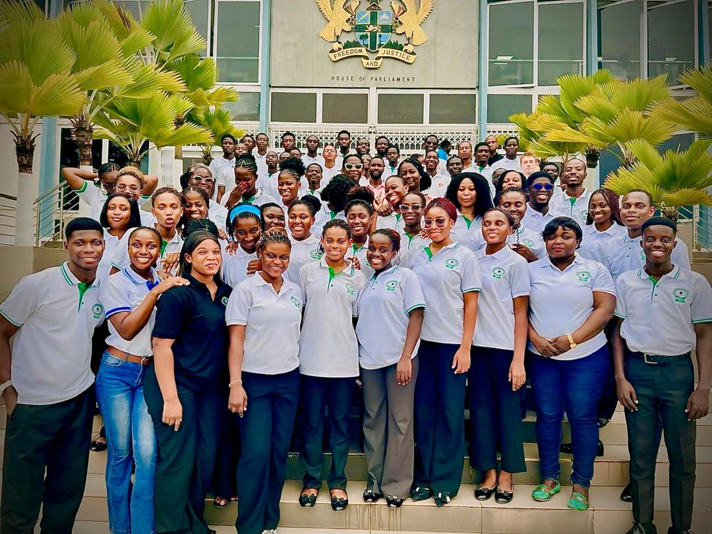
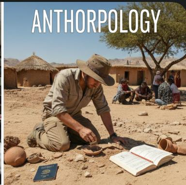
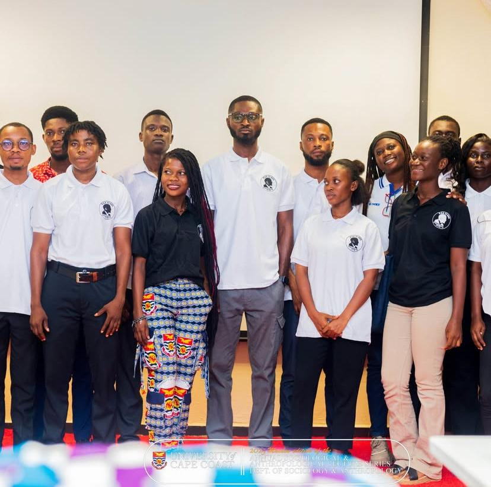
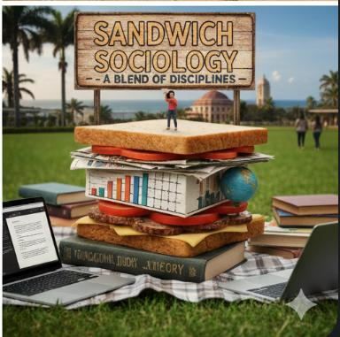

Department of Sociology & Anthropology
University of Cape Coast
Exploring human societies, cultures, and social structures. Advancing knowledge through research and innovative teaching.
0
Years of Excellence
0
Active Alumni
0
Academic Programs
0
Faculty Members
Admissions 2026/2027
Ready to join the Department of Sociology & Anthropology? Start your application journey here.
Upcoming Program Flyers
View and download the latest flyers for upcoming department activities and opportunities.
{kind=link}

Program Flyer 2
{kind=link}
Explore Quickly
Search key opportunities, resources, and highlights across the department homepage.
BA Sociology & Anthropology
Build strong analytical and research skills for public service, development, and policy work.
Postgraduate Studies
Advance with MA, MPhil, and PhD pathways focused on rigorous social research.
Scholarships & Funding
Discover available opportunities that can support your academic journey at UCC.
Course Materials
Access course materials and resources through the department.
Meet Our Faculty
Learn from experienced scholars with deep expertise in sociology and anthropology.
SOASA Student Life
Connect with peers through departmental leadership, events, and community impact.
Sandwich Programs
Flexible diploma and degree programs for working professionals in conflict management and applied practice.
No matching items found. Try another keyword.
Program Comparison
Choose the right pathway by comparing duration, focus, and typical outcomes.
| Program | Duration | Mode | Focus | Typical Outcomes |
|---|---|---|---|---|
| BA Sociology & Anthropology | 4 Years | Regular | Social theory, methods, culture | Policy analysis, NGOs, public service |
| Anthropology Track | 4 Years | Regular | Culture, identity, ethnography | Research, development, cultural institutions |
| Postgraduate (MA/MPhil/PhD) | 1–4 Years | Research-led | Advanced theory and original research | Academia, consulting, policy leadership |
| Sandwich Programs | Flexible | Modular | Conflict management and applied practice | Professional advancement for working learners |
Research & Impact Highlights
Our faculty and students contribute to policy, communities, and scholarship in Ghana and beyond.
Gender & Development
Inclusive Social Development
Evidence-driven work on gender equity, youth wellbeing, and inclusive blue economy governance.
Migration & Conflict
Peace, Mobility, and Resilience
Research supporting community-level conflict transformation and migration-informed policy action.
Health & Society
Social Determinants of Wellbeing
Interdisciplinary studies on health, culture, social demography, and behavior change.
Alumni Voices
What our graduates say about their learning journey and career preparation.
“A part of me feels like I am writing this ten years late, the other part of feels this is right on time. My time as a graduate student shaped my intellectual curiosity and endowed me the useful tools to pursue meaningful research. The Department's supportive and interdisciplinary ecosystem is unparallel; of sort which broadened my perspective in several subject areas. For those passionate about research, I strongly recommend applying.”
“Sociology, I would say is not just an academic program of study but a life time life opener. Living in today's society where every aspect of it deals with human life and interactions, I have come to understand and relate well with people around me. I demonstrated some unique and exceptional skills in my leadership journey as the secretary and vice president of VALCO Hall. And I'd boldly say I was able to do so because I understood what the program entails.”
“As an alumnus of the department of Sociology and Anthropology, my academic journey has been both enriching and transformative. The programme equipped me with a strong understanding of social systems, cultural dynamics and critical thinking skills essential for real-life experiences. Through engaging with lecturers, faculty and peers I developed intellectually and personally. I am proud to be part of the SOASA community.”
About Our Department
The Department of Sociology, University of Cape Coast was established in 1963 to train students to analyse and evaluate, from a critical view point, social and developmental issues in all spheres of social life. The Department redesigned and realigned its programmes with a vision to maintaining, consolidating and further strengthening its position as a centre of excellence and scholarship in the teaching of Sociology and Anthropology as social sciences and also as a centre of research in relevant socio-cultural issues.
The Department’s mission is to produce graduates who are adequately equipped with critical and analytical skills in order to meet the educational, administrative and other resource needs of the country; and extension and consultancy services to the global community.
We are committed to fostering critical thinking, cultural sensitivity, and research excellence among our students and faculty.
Our Programs
Discover our comprehensive academic offerings designed to prepare you for a meaningful career in social sciences

Sociology
Study social relationships, institutions, and how societies develop and change over time.
Learn more →
Anthropology
Explore human cultures, origins, and the diverse ways people live around the world.
Learn more →
Postgraduate Studies
Advanced research programs including MA, MPhil, and PhD in Sociology.
Learn more →
Sandwich Programs
Flexible diploma and degree programs in Social Behaviour and Conflict Management for working professionals.
Learn more →Meet Our Faculty
Our experienced faculty members are experts in their fields, dedicated to student success.
Course Materials & Slides
Course materials and study resources will be provided by the department.
Ready to Begin Your Journey?
Join a vibrant community of scholars dedicated to understanding and improving human societies.